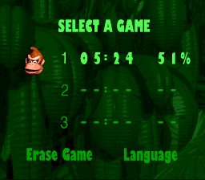
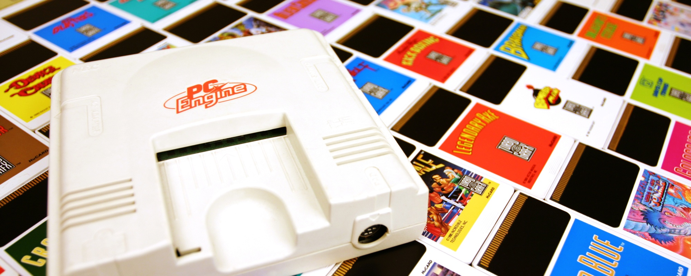

Internet Archive, la librería de internet (not-for-profit estadounidense).
Colabora con Wikipedia, la enciclopedia de internet. Los crawlers de IA conservan las páginas refereciadas y colaboran de vuelta.
Team Human: Ep. 128 Brewster Kahle "The Library of Everything"
Copyright
Derechos de autor
Hay un problema de derechos de autor.
Todo lo que está en dominio público puede salvarse. Lo que no, incluso aunque esté abandonado, tiene problemas de copyright. No podemos conservar gran parte del siglo XX.
Sin embargo, cualquiera puede ir a una biblioteca/filmoteca/etc y disfrutarlo, pero no se puede conservar en abierto (comunicación pública).
También existen los problemas de los sistemas de DRM (Digital Rights Management) y del streaming.
Derechos de autor
Estatuto de la Reina Ana (1710)
Su objetivo es proteger y fomentar la cultura
Se originan junto a la idea del depósito legal para el dominio público
Propiedad intelectual
Capitalismo cognitivo (finales s. XX)
Su objetivo es el beneficio económico
Se promueve la escasez artificial a través de la privatización
Depósito legal y dominio público.
El Estatuto de la Reina Ana ya introdujo junto con los derechos de autor el sistema de depósito legal para libros como medida de protección del patrimonio cultural. Es una medida para hacer efectivo el dominio público. Hoy en día se ha ampliado, pero solo para algunas obras.
Depósito legal
Biblioteca Nacional de España
Hay que evitar abusos y secuestros del dominio público por parte de sus legítimos custodios:
Depósito legal.
España estudia ampliarlo a los videojuegos, webs y otros materiales.
Es un sistema bueno pero siguen existiendo problemas. Los custodios son órganos centralizados, por lo que se pueden corromper. Dos ejemplos: las «ediciones críticas» de zarzuelas en dominio público que la SGAE utiliza para saquear a las orquestas; y el acuerdo entre la BNE y Telefónica, en el que las digitalizaciones no pueden utilizarse comercialmente (CC BY-NC-SA), haciendo inefectivo el dominio público. ¿Puede ocurrir algo parecido con «adaptaciones» de software o videojuegos a los dispositivos del futuro?
Grupo de investigación para descubrir, restarurar y preservar los secretos de Pokémon
Abandonware.
Internet Arcade (conservación, disfrute).
No-Intro (integridad).
The Cutting Room Floor (arqueología): secretos ocultos, niveles o jefes sin utilizar, textos de los desarrolladores retando a los "piratas" (hoy en día, dumpers), menús de depuración, etc.
The Helix Chamber (arqueología).
Demo time!
Donkey Kong Country (SNES)
Menú de selección de partida:
↓ + ↓ + ↓ + ↓ + A + R + B + Y + ↓ + A + Y + Select

Donkey Kong Country, pantalla de selección de partida
Test de sonido oculto en Donkey Kong Country.
"Press Down, Down, Down, Down, A, R, B, Y, Down, A, Y on the file select menu. Once the code is entered, press Select to play a song."
¿Muerte por éxito del retrogaming?
Empresas vendiendo hardware con emuladores libres o abiertos sin respetar las licencias.
SNES9x no puede venderse
Ningún emulador libre puede distribuirse sin informar de sus autores
Toda modificación de un emulador con copyleft debe liberarse de vuelta
Se dificulta la atracción de talento y los colaboradores se queman.
Faltan finanzas para que los proyectos hechos por hobby puedan defender sus derechos.
Caso real
Preservación de la voz sintética
Calltext 5010, fabricado por SpeechPlus, que utilizaba el software DECtalk
Una traqueostomía (sic) le había dejado sin habla.
Utilizaba el mismo sintetizador desde hacía tres décadas.
La voz que emitía el aparato era suya. Era parte de su identidad.
Caso real: Preservación de la voz. Él quiso mantener su voz tal y como era; no quería otra mejora tecnológica. Se identificó con esa voz, salida de ese cacharro de los 80.
[He] was still using the CallText 5010 speech synthesizer, a version last upgraded in 1986. In nearly 30 years, he had never switched to newer technology. [He] liked the voice just the way it was, and had stubbornly refused other options.

NEC PC Engine, el rival de Super Nintendo en Japón (Nintendo Life)
Soluciones
En busca de una voz
Trataron de que sistemas nuevos imitasen la voz.
❌ Necesitan internet.
Consiguieron el código fuente de una versión de 1996.
❌ Sonaba distinta para él.
❌ El código era propiedad del fabricante.
Hicieron emuladores de los dos procesadores: Intel y NEC.
✅ Utilizaron partes de un emulador software libre —Higan del desarrollador byuu—, y lo metieron todo en una Raspberry Pi
Arqueología digital para recuperar la soberanía que tenía sobre su voz.
The other issue was that Nuance owned the code, not [he]. [He] had always been intent on controlling the use of his own voice. If the team avoided using proprietary software, [he] was likely to have more control.
¿De dónde mejor tomar código que de un proyecto de software libre de un programador, byuu, que trata de preservar diversas consolas retro con alta precisión?
A separate emulator, for the NEC, was borrowed from an open-source Nintendo emulator called Higan.
¿Y para que él la probase? ¡Pues una Raspberry Pi!
They still needed to port the voice to the PC, so temporarily, Wood loaded a version of the voice onto a miniature hardware board known as a Raspberry Pi.